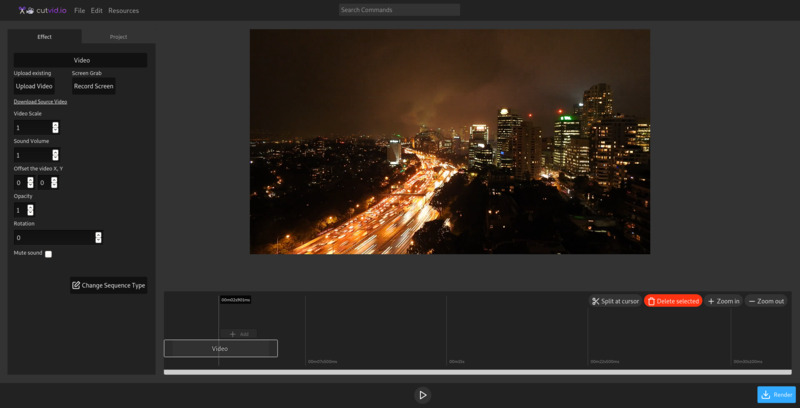

Cutvid.io is a video editor for desktop browsers.
You can use it to cut and combine videos, gifs, music and text. It is free and requires no installation. Just launch it in your browser and start editing. We do not apply watermarks!
It looks like your device is too small to run cutvid.io. Please come back on your PC/mac! You can also read the docs on your phone : docs
If you are feeling dangerous, you can try cutvid.io on your current device: Try anyway